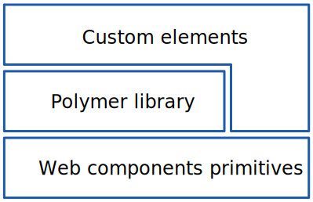

are a set of standards that allow for the creation of reusable widgets or components in web documents and web applications
On Polymer and Smileys
... or Polysmileys ...
≧^◡^≦

@CarmenPopoviciu
=^.^=
I <3 trampolines I'm happy around cakes
=^.^=
I
fav ascii smiley
^_^
fav ascii smiley++
About this talk
ASCII smileys make the Web a better place
Pink is not the coolest color ever, but sometimes it can be fun
Random pictures that you take from the airplane can sometimes turn out to be useful
#unfiltered #friendsforever #unicorns #rainbows #allthatstuff
The true heroes of this talk are:
(>‿◠)✌ Guilherme Rv Coelho <super-presentation>
☜(ˆ▽ˆ) Filipe Araujo <akyral-code>
ONE LAST WARNING!
This talk contains an overdose of smileys
^.^= ≥^.^≤ ≤^.^≥ (>‿◠)✌ ≧✯◡✯≦✌
≧◠◡◠≦✌ ≧'◡'≦ =☽ ≧◔◡◔≦ ≧◉◡◉≦ ≧✯◡✯≦
≧❂◡❂≦ ≧^◡^≦ ≧°◡°≦ ≧◡≦ (─‿‿─) ᵔ.ᵔ :◅)
≕) ≔) ≠) |:-) =) :) :-) ;) ;=)
;-) ж) ^o^ ^.^ ^.^) =^.^= :*) :->
(¬‿¬) ٩(●̮̮̃•)۶ ٩(̃-̮̮̃-)۶ (-̮̮̃•)۶ ٩(×̯×)۶ ٩(•̮̮̃-̃)۶
<(^,^)> (≧◡≦) 乂⍲‿⍲乂 〷◠‿◠〷 '☋' :=◑ ☋
Σ=) Ж-þ ^^. （‐＾▽＾‐） =D ≧❂◡❂≦ ≧^◡^≦ ≧°◡°≦ ≧◡≦ (─‿‿─)
☜(*▽*)☞ ☜(˚▽˚)☞ ZB-D \ ˚▽˚ / 2к-Ͻ 2к-3 |
(• ◡•)| (>‿♥) ✿◕ ‿ ◕✿ ❀◕ ‿ ◕❀ ❁◕ ‿ ◕❁ %ᵕ‿‿ᵕ%
(◡‿◡✿) (✿◠‿◠) ≧❀‿❀≦ ^.^= ≥^.^≤ ≤^.^≥ (>‿◠)✌ ≧✯◡✯≦✌
≧◠◡◠≦✌ ≧'◡'≦ =☽ ≧◔◡◔≦ ≧◉◡◉≦ ≧✯◡✯≦ ✿◕ ‿ ◕✿ ❀◕ ‿ ◕❀
≧❂◡❂≦ ≧^◡^≦ ≧°◡°≦ ≧◡≦ (─‿‿─) ᵔ.ᵔ :◅)
≕) ≔) ≠) |:-) =) :) :-) ;) ;=)
;-) ж) ^o^ ^.^ ^.^) =^.^= :*) :->
(¬‿¬) ٩(●̮̮̃•)۶ ٩(̃-̮̮̃-)۶ (-̮̮̃•)۶ ٩(×̯×)۶ ٩(•̮̮̃-̃)۶
<(^,^)> (≧◡≦) 乂⍲‿⍲乂 〷◠‿◠〷 '☋' :=◑ ☋
Σ=) Ж-þ ^^. （‐＾▽＾‐） =D ≧❂◡❂≦ ≧^◡^≦ ≧°◡°≦ ≧◡≦ (─‿‿─)
☜(*▽*)☞ ☜(˚▽˚)☞ ZB-D \ ˚▽˚ / 2к-Ͻ 2к-3 |
(• ◡•)| (>‿♥) ✿◕ ‿ ◕✿ ❀◕ ‿ ◕❀ ❁◕ ‿ ◕❁ %ᵕ‿‿ᵕ%
(◡‿◡✿) (✿◠‿◠) ≧❀‿❀≦ ^.^= ≥^.^≤ ≤^.^≥ (>‿◠)✌ ≧✯◡✯≦✌
≧◠◡◠≦✌ ≧'◡'≦ =☽ ≧◔◡◔≦ ≧◉◡◉≦ ≧✯◡✯≦
≧❂◡❂≦ ≧^◡^≦ ≧°◡°≦ ≧◡≦ (─‿‿─) ᵔ.ᵔ :◅)
≕) ≔) ≠) |:-) =) :) :-) ;) ;=)
;-) ж) ^o^ ^.^ ^.^) =^.^= :*) :->
(¬‿¬) ٩(●̮̮̃•)۶ ٩(̃-̮̮̃-)۶ (-̮̮̃•)۶ ٩(×̯×)۶ ٩(•̮̮̃-̃)۶
<(^,^)> (≧◡≦) 乂⍲‿⍲乂 〷◠‿◠〷 '☋' :=◑ ☋
Σ=) Ж-þ ^^. （‐＾▽＾‐） =D ≧❂◡❂≦ ≧^◡^≦ ≧°◡°≦ ≧◡≦ (─‿‿─)
☜(*▽*)☞ ☜(˚▽˚)☞ ZB-D \ ˚▽˚ / 2к-Ͻ 2к-3 |
(• ◡•)| (>‿♥) ✿◕ ‿ ◕✿ ❀◕ ‿ ◕❀ ❁◕ ‿ ◕❁ %ᵕ‿‿ᵕ%
(◡‿◡✿) (✿◠‿◠) ≧❀‿❀≦ ≧❂◡❂≦ ≧^◡^≦ ≧°◡°≦ ≧◡≦ (─‿‿─)
Web Components
Web Components
Web Components Standards
- ッCustom Elements
- ッTemplates
- ッShadow DOM
- ッHTML Imports
Web Components Standards
- シCustom Elements
- ッTemplates
- ッShadow DOM
- ッHTML Imports
Custom Elements
Allow you to extend the HTML vocabulary and define your own, new, fully-featured DOM elements
<ascii-smile></ascii-smile>
Custom Elements give you
declarative, readable, meaningful, reusable, self sustainable
HTML Elements
Custom Element Registration
Is the process of adding an element definition to a registry
document.registerElement('ascii-smile', // the type
{
// the prototype. HTMLElement/SVGElement by default
prototype: Object.create(HTMLElement.prototype)
}
); // returns a constructor function
<ascii-smile></ascii-smile>
Type Extension Custom Elements
are Custom Elements that extend other existing elements
var AsciiSmileProto = Object.create(HTMLElement.prototype);
...
document.registerElement('ascii-carmen-smile',
{
prototype: AsciiSmileProto,
extends: 'ascii-smile'
}
);
<ascii-smile is="ascii-smile-carmen"></ascii-smile>
Lifecycle Callbacks
- ッ createdCallback (instance was created and its definition was registered)
- ッ attachedCallback (element was inserted into the document)
- ッ detachedCallback (element was removed from the document)
- ッ attributeChangedCallback (element's attribute was added/changed/removed)
Web Components Standards
- ッCustom Elements
- シTemplates
- ッShadow DOM
- ッHTML Imports
Templates
Enable you to store HTML data inside an HTML document. The content of a <template> element is parsed without interpreting it (no loading of images etc.)
❂.❂ Remember! ❂.❂
- ッParsed as HTML
- ッNot rendered
- ッCan be cloned
- ッInstantiated at runtime
Declaring a Template
<template id="template">
<style>...</style>
<div>
<h1>ASCII Heart</h1>
<div><3</div>
<img src="http://ascii-paradise/heart.jpg">
</div>
</template>
Enabling a Template
<script>
var template = document.querySelector('#template');
var clone = document.importNode(template.content, true);
var host = document.querySelector('#host');
host.appendChild(clone);
</script>
<div id="host"></div>
Web Components Standards
- ッCustom Elements
- ッTemplates
- シShadow DOM
- ッHTML Imports
Shadow DOM
Shadow DOM encapsulates and hides the innards of a custom element inside a nested document.
Shadow DOM Concepts
- ッ Document tree - a node tree whose root node is a document
- ッ Shadow host - element that hosts one shadow tree
- ッ Shadow tree - a node tree hosted by a shadow host
- ッ Shadow root - the root node of a shadow tree


let me show you something
Web Components Standards
- ッCustom Elements
- ッTemplates
- ッShadow DOM
- シHTML Imports
HTML Imports
is a way to include HTML documents in other HTML documents in a simple and declarative way
Declaring HTML Imports
<html> <!-- import referrer-->
<head>
<!-- URL = import location -->
<!-- ascii-paradise.html = imported document -->
<link rel="import" href="path/to/ascii-paradise.html">
</head>
</html>
link.import
Including an import on a page returns a Document not its content
var content = document.querySelector('link[rel="import"]').import;
Let's give some ❤ to the Web
<ascii-heart></ascii-heart>
<template id="heart-template">
<style>
...
</style>
<div id="ascii-heart"><3</div>
</template>
<script>
// thisDoc = ascii-heart.html
var thisDoc = document._currentScript.ownerDocument;
// mainDoc = index.html
var mainDoc = document;
var proto = Object.create(HTMLElement.prototype);
proto.createdCallback = function() {
var shadowRoot = this.createShadowRoot();
var template = thisDoc.querySelector('#heart-template');
var clone = thisDoc.importNode(template.content, true);
shadowRoot.appendChild(clone);
};
mainDoc.registerElement('ascii-heart', {
prototype: proto
});
</script>
Polymer
Polymer
is a library built on top of the web components standards, that helps you build reusable components, faster and easier
Web Components Stack
Polymer features
- ッElement registration
- ッLocal DOM
- ッDeclared Properties
- ッData Binding
- ッStyling
- ッ...
Custom Element Registration
To register a custom element, use the Polymer function, and pass in the prototype for the new element
var ASCIIHeart = Polymer({
is: 'ascii-heart', // type (mandatory ofc ;))
properties: {...},
ready: function() {...},
...
});
// imperative
var asciiHeart = document.createElement('ascii-heart');
// or
var asciiHeart = new ASCIIHeart();
<!-- declarative -->
<ascii-heart></ascii-heart>
Prototype chaining
The Polymer function sets up the prototype chain for your custom element, chaining it to the Polymer Base prototype (which provides Polymer value-added features)
Polymer.Base
Polymer.Base = {
__isPolymerInstance__: true,
_addFeature: function() {
// pluggable features
},
registerCallback: function() {...},
createdCallback: function() {...},
attachedCallback: function() {...},
detachedCallback: function() {..},
attributeChangedCallback: function() {...},
...
};
...
Polymer.Base = Polymer.Base.chainObject(Polymer.Base, HTMLElement.prototype);
Class-Style Constructor
allows creating a Custom Element without immediately registering it
//returns a constructor that can be passed to document.registerElement
// to register your element
var ASCIIHeart = Polymer.Class({
// same prototype argument as the Polymer function
is: 'ascii-heart',
created: function() {
...
}
...
});
document.registerElement('ascii-heart', ASCIIHeart);
var asciiHeart = new ASCIIHeart();
// or
var asciiHeart = document.createElement('ascii-heart');
Type Extension Elements
var ASCIICarmenSmile = Polymer({
is: 'ascii-carmen-smile',
extends: 'ascii-smile'
});
var asciiCarmenSmile = document.createElement('ascii-smile', 'ascii-carmen-smile');
// or
var asciiCarmenSmile = new ASCIICarmenSmile();
<ascii-smile is="ascii-carmen-smile"></ascii-smile>
ONLY native elements!!!
Lifecycle callbacks
- ッcreated
- ッready
- ッattached
- ッdetached
- ッattributeChanged
Lifecycle callbacks
- ッcreated
- シready
- ッattached
- ッdetached
- ッattributeChanged
Lifecycle callbacks
Polymer({
is: 'ascii-heart',
created: function() {
/* createdCallback */
// Called when the element has been created,
// but before property values are set and local DOM is initialized
},
ready: function() {
// Called after property values are set and local DOM is initialized
},
attached: function() {
/* attachedCallback */
// Called after the element is attached to the document
},
detached: function() {
/* detachedCallback */
// Called after the element is detached from the document
},
attributeChanged: function(name, type) {
/* attributeChangedCallback*/
// Called when one of the element's attributes is changed
}
});
Local DOM
is the DOM that an element creates
Local DOM
Polymer supports multiple Local DOM implementations
- ッShadow DOM - in browsers that support it
- ッShady DOM - currently the default for all browsers
Creating Local DOM
<dom-module id="ascii-heart">
<template>
<div id="heart"><3</div>
</template>
<script>
Polymer({
is: 'ascii-heart'
});
</script>
</dom-module>
Node finding
- ッPolymer keeps a map of all static node instances in its local DOM
- ッnodes with ids are stored in this.$ by id
- ッdynamically-created nodes can be selected using this.$$(selector)
Node finding
<dom-module id="ascii-heart">
<template>
<div id="heart"><3</div>
</template>
<script>
Polymer({
is: 'ascii-heart',
ready: function() {
this.$.heart.textContent = '<3 <3';
}
});
</script>
</dom-module>
Remember our friend ascii-shrug?
Let's say you don't like his face and want to make it customizable.
That would obviously break the poor fellow's heart </3
But he's a smiley. He'll forgive you
Insertion Points
Polymer provides insertion points via the <content> element. This element supports a select attribute which filters nodes via a simple selector
Insertion Points
<ascii-shrug>
<span class="my-face">◔◡◔</span>
<span class="my-other-face">◔.◔</span>
</ascii-shrug>
<dom-module id="ascii-shrug">
<template>
<div class="right-arm">¯\_</div>
<div class="face">
<content ></content>
</div>
<div class="left-arm">_/¯</div>
</template>
<script>
Polymer({
is: 'ascii-shrug'
});
</script>
</dom-module>
Insertion Points
<ascii-shrug>
<span class="my-face">◔◡◔</span>
<span class="my-other-face">◔.◔</span>
</ascii-shrug>
<dom-module id="ascii-shrug">
<template>
<div class="right-arm">¯\_</div>
<div class="face">
<content select=".my-face"></content>
</div>
<div class="left-arm">_/¯</div>
</template>
<script>
Polymer({
is: 'ascii-shrug'
});
</script>
</dom-module>
DOM API
Polymer provides a custom API for manipulating DOM. Almost all of these methods and properties have the same signatures as their standard DOM equivalents
DOM API
- ッPolymer.dom(parent).appendChild(node)
- ッPolymer.dom(parent).removeChild(node)
- ッPolymer.dom(node).firstChild
- ッPolymer.dom(node).nextSibling
- ッPolymer.dom(node).innerHTML
- ッPolymer.dom(parent).querySelector(selector)
- ッ ...
Declared Properties
Are the public API of your element. Having declared properties on a custom element, allows a user to configure the property from markup
Declared Properties
<ascii-hello face="◉◡◉" waving-hand="left"></ascii-hello>
Polymer({
is: 'ascii-hello',
ready: function() {
}
});
Declared Properties
<ascii-hello face="◉◡◉" waving-hand="left"></ascii-hello>
Polymer({
is: 'ascii-hello',
properties: {
face: String,
wavingHand: {
type: String,
value: 'right'
}
},
ready: function() {
// do smth with the properties;
}
});
Property keys
- ッ type - Boolean, Date, Number, String, Array or Object
- ッ value - boolean, number, string or function. Default property value
- ッ readOnly - specifies if the property can be set directly by assignment or data binding
- ッ notify - if true, the property is available for two-way data binding
- ッ observer - function called when the property value changes
- ッ ...
Data Binding
binds a property or sub-property of a custom element (the host element) to a property or attribute of an element in its local DOM (the child or target element)
Data Binding
<dom-module id="ascii-host">
<template>
<ascii-smiley color="{{discoColor}}"></ascii-smiley>
</template>
<script>
Polymer({
is: 'ascii-host',
properties: {
discoColor: String
}
});
</script>
</dom-module>
Data Binding Annotations
- ッ[[]] - one-way binding. Data flow is downward, from host to child
- ッ{{}} - automatic binding. Can be both one-way or two-way, depending on the target's configuration
That last one was a bit...confuuusing
Put on those party glasses
▧.▨ ≧✯◡✯≦✌
We've got some explaining to do
One-way Data Binding(downward)
<ascii-smiley color="[[discoColor]]"></ascii-smiley>
<script>
Polymer({
is: 'ascii-smiley',
properties: {
color: {
type: String,
notify: true
}
}
});
</script>
<!-- changes to hosts's "discoColor" propagate to child's "color" -->
<!-- changes to child's "color" are ignored by host due to [[]] syntax -->
One-way Data Binding(downward)
<ascii-smiley color="{{discoColor}}"></ascii-smiley>
<script>
Polymer({
is: 'ascii-smiley',
properties: {
color: {
type: String,
notify: false
}
}
});
</script>
<!-- changes to hosts's "discoColor" propagate to child's "color" -->
<!-- host won't be notified by changes to child's "color" due to notify:falsey -->
One-way Data Binding(upward)
<ascii-smiley color="{{discoColor}}"></ascii-smiley>
<script>
Polymer({
is: 'ascii-smiley',
properties: {
color: {
type: String,
notify: true,
readOnly: true
}
}
});
</script>
<!-- changes to hosts's "discoColor" are ignored by child due to readOnly:true -->
<!-- changes to child's "color" propagate to host's "discoColor" -->
Two-way Data Binding
<ascii-smiley color="{{discoColor}}"></ascii-smiley>
<script>
Polymer({
is: 'ascii-smiley',
properties: {
color: {
type: String,
notify: true
}
}
});
</script>
Binding to text content
<dom-module id="ascii-paradise">
<template>
<!-- Binding to text content -->
{{greeting}} from ASCII Paradise!
<!-- Binding to sub-properties -->
<ascii-smiley face="{{smiley.face}}"
smile-size="{{smiley.smileSize}}"></ascii-smiley>
</template>
<script>
Polymer({
is: 'ascii-paradise',
properties: {
greeting: String,
smiley: Object
}
});
</script>
</dom-module>
Styling
Scoped styles should be provided via <style> tags placed inside the element’s local DOM <template>
<dom-module id="ascii-hello">
<template>
<style>
:host {
/* host styles*/
}
.right-arm {
/* element with class "right-arm" styles*/
}
</style>
<div class="right-arm"></div>
<div class="head"></div>
</template>
...
</dom-module>
Style Modules
are used to share style declarations between elements
<!-- ascii-heart-style.html -->
<dom-module id="ascii-heart-style">
<template>
<style>
:host { color: red; }
</style>
</template>
</dom-module>
<!-- ascii-heart.html -->
<link rel="import" href="../ascii-heart-style.html">
<dom-module id="ascii-heart">
<template>
<style is="custom-style" include="ascii-hug-style"></style>
</template>
...
</dom-module>